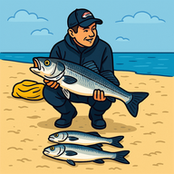

PESCA LÚDICA MAREm que combinação de maré e período costumas apanhar mais, e com mais peso médio?
Usa isto para guardares as tuas capturas antes de mudares de telemóvel, ou para restaurares um backup feito anteriormente.
Gera um ficheiro com todas as tuas capturas. Guarda-o num sítio seguro (email para ti próprio, Drive, etc.).
Escolhe um ficheiro de backup exportado anteriormente por esta app.